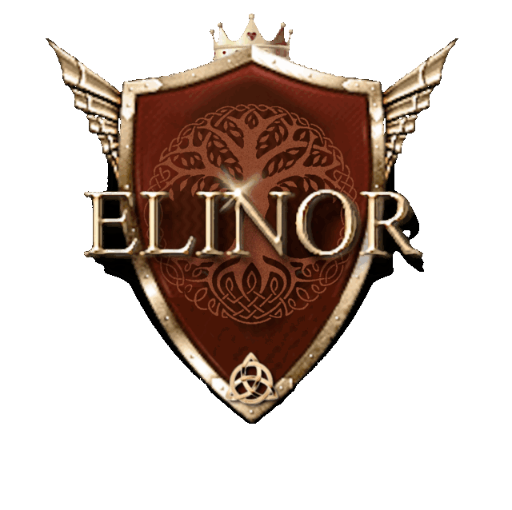

Písně o vnitřní síle, přírodě a odvaze žít naplno

Bylo nebylo, za devatero horami a devatero řekami, v jednom malém moravském království se narodila princezna Elinor…
Elinor Marsi je zpěvačka a skladatelka, jejíž písně vyrůstají z lásky k přírodě, keltské a indiánské inspirace a z cesty osobního rozvoje. První písně skládala už ve čtyřech letech, vyrostla na muzikálové a klasické hudbě a dnes tvoří pop s příměsí žánrů podle aktuální nálady — vždy s poselstvím, že štěstí je volba.
Na pódiu ji doprovází kapela; společně přinášejí publiku energii, něhu i příběhy, které se dotýkají duše.
Kromě hudby se Elinor věnuje sochařství, psaní a vlastnímu módnímu stylu — víc o tom v sekci Svět Elinor níže.
Nový singl · oficiální videoklip 2026
Vlastní technika ručního zpracování umělého pískovce, kterou Elinor vyvinula ze své práce s keramikou. Erby, sochy a ornamenty zdobí hrady a zámky po celé zemi.
Autorka mystické knihy Osudné jezero, dokončené v patnácti letech. Nyní připravuje veršovaný román Srdce s hříchem v erbu — částečně veršovaný vampýří příběh zaměřený na duševní rozvoj.
Vlastní módní styl, který spojuje krásu renesanční módy s praktičností té moderní — šitý na míru srdci každé princezny.
Zpěv + doprovodná kapela; varianta sólo/duo na vyžádání.
Kompletní požadavky na PA, monitory a mikrofonní vstupy v dokumentu.
Rozmístění na pódiu včetně zapojení a rozměrů.
Světelné nálady k písním a požadavky na šatnu.
Dokument bude doplněn — tlačítko je připraveno.
Nové písně a termíny koncertů jednou za čas do vaší schránky.